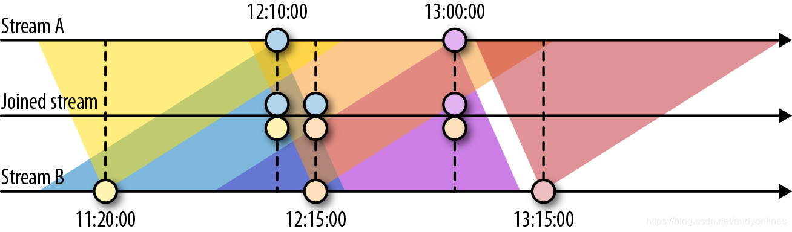

6. 基于时间和窗口的算子
配置时间特性
- StreamExecutionEnvironment
- ProcessingTime：处理机器的系统时钟，极低延迟
- EventTime：数据自身包含的信息（时间戳），处理乱序到达
- IngestionTime：把在数据源算子的处理时间作为事件时间，并自动生成水位线
- 分配时间戳和生成水位线
- 在数据源完成：SourceFunction
- 周期分配器：AssignerWithPeriodicWatermarks
- 时间间隔：
ExecutionConfig.setAutoWatermarkInterval(default = 200ms) - 如果
getCurrentWatermark返回非空，且大于上一个水位线时间戳，就发出新水位线 assignAscendingTimeStamps：输入元素时间戳单调增加BoundedOutOfOrdernessTimeStampExtractor：接受最大预期延迟
- 时间间隔：
- 定点分配器：AssignerWithPunctuatedWatermarks
extractTimestamp->checkAndGetNextWatermark
- 水位线：平衡延迟和结果的完整性
处理函数
ProcessFunction,KeyedProcessFunction,CoProcessFunction,ProcessJoinFunction,BroadcastProcessFunction,KeyedBroadcastProcessFunction,ProcessWindowFunction,ProcessAllWindowFunction- KeyedProcessFunction[KEY, IN, OUT]
- 实现 RichFunction：
open(),close(),getRuntimeContext() - processElement(v: IN, ctx: Context, out: Collector[OUT])
- 每个记录都调用一次
- 可以通过 Context 对象访问时间戳、当前记录的键值、TimerService
- onTimer(timestamp: Long, ctx: Context, out: Collector[OUT]
- 回调函数，注册的计时器触发时被调用
- 实现 RichFunction：
- 时间服务和计时器 TimerService
- currentProcessingTime(): Long
- currentWatermark(): Long
- registerProcessingTimeTimer(timestamp: Long): Unit // 处理时间计时器（机器时间）
- registerEventTimeTimer(timestamp: Long): Unit // 事件事件计时器（水位线）
- deleteProcessingTimeTimer(timestamp: Long): Unit
- deleteEventTimeTimer(timestamp: Long): Unit
- 对于每个键值和时间戳，只能注册一个计时器
- e.g. 如果某个传感器的温度在1秒内的处理时间内持续上升，则发出警告
- 向副输出发送数据 OutputTag[X]
- e.g. 在遇到读数温度低于 32℉ 的记录，向副输出发送警告
- CoProcessFunction
- e.g. sensor_2 转发 10秒，sensor_7 转发 1分钟
窗口算子
- 定义窗口算子
- 键值分区：stream.keyBy(...).window(...).reduce/aggregate/process(...)
- 非键值分区（不支持并行）：stream.windowAll(...).reduce/aggregate/process(...)
- 内置窗口算子
- 滚动窗口（默认对齐，可以指定偏移量）
.window(TumblingEventTimeWindows.of(Time.seconds(1))).window(TumblingProcessingTimeWindows.of(Time.seconds(1)))- 简写：
.timeWindow(time.seconds(1))
- 滑动窗口（窗口大小、滑动间隔）
.window(SlidingEventTimeWindows.of(Time.hours(1), Time.minutes(15))).window(SlidingProcessingTimeWindows.of(Time.hours(1), Time.minutes(15)))- 简写：
.timeWindow(Time.hours(1), Time.minutes(15)))
- 会话窗口（非活动间隔）
.window(EventTimeSessionWindows.withGap(Time.minutes(15))).window(ProcessingTimeSessionWindows.withGap(Time.minutes(15)))
- 滚动窗口（默认对齐，可以指定偏移量）
- 在窗口上应用函数（增量/全量）
- ReduceFunction：简单聚合，e.g. 最低温度
- AggregateFunction：
createAccumulator,add,geResult,merge， e.g. 平均温度 - ProcessWindowFunction：全量元素复杂计算，e.g. 5秒滚动分组，计算最低温和最高温
- process(key: KEY, ctx: Context, vals: Iterable[IN], out: Collector[OUT])
- 增量聚合与 ProcessWindowFunction
- Context 对象可以访问窗口的元数据或状态，可以连接在 Reduce/Process 后面
- 窗口触发器触发时，传递给 process 的 Iterable.length == 1
input
.keyBy(...)
.timeWindow(...)
.reduce(
incrAggregator: ReduceFunction[IN} || AggregateFunction[IN, ACC, V],
function: ProcessWindowFunction[IN, OUT, K, W]
)
自定义窗口算子
- 窗口的生命周期
- 窗口创建：WindowAssigner 首次向它分配元素时
- 窗口状态：窗口内容、窗口对象、触发器计时器、触发器中的自定义状态
- 窗口删除：窗口结束时间到达时，需要清除自定义触发器状态（状态泄露）
- 窗口分配器
- WindowAssigner 将到来的元素分配给哪些窗口（0/1/n），e.g. 每30秒滚动窗口
- MergingWindowAssigner：对已有窗口合并，例如 EventTimeSessionWindows 分配器
- 触发器 (optional)
- 默认触发器：处理时间或水位线超过窗口结束边界时间
- 提前触发：水位线到达结束时间戳前，计算，并发出早期结果（保守水位线+低延迟结果）
- TriggerResult：
CONTINUE,FIRE,PURGE,FIRE_AND_PURGE
- 移除器 (optional)：evictBefore, evictAfter
- elements: Iterable, size: Int, window: W, context: EvictorContext
基于时间的双流 Join
- 基于间隔的 Join：相同键值 && 时间戳不超过指定间隔，e.g.
between(<lower-b>, <upper-b>) - 基于窗口的 Join：
input1.join(input2).where(p1).equalTo(p2).window(...).apply(...)

处理迟到数据
- 丢弃迟到事件：default
- 重定向迟到事件：副输出重定向 -> 后续处理（如定期回填操作 backfill process）
- 基于迟到事件更新结果：延迟容忍度
allowedLateness()，根据状态标识 first / update